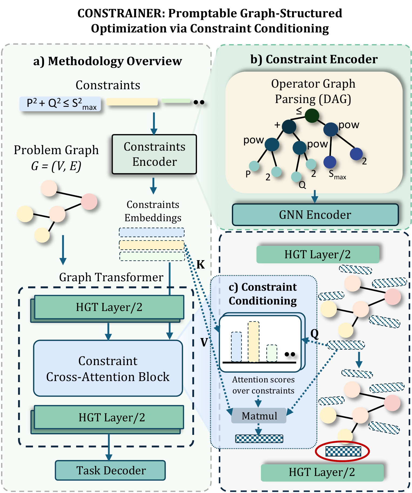
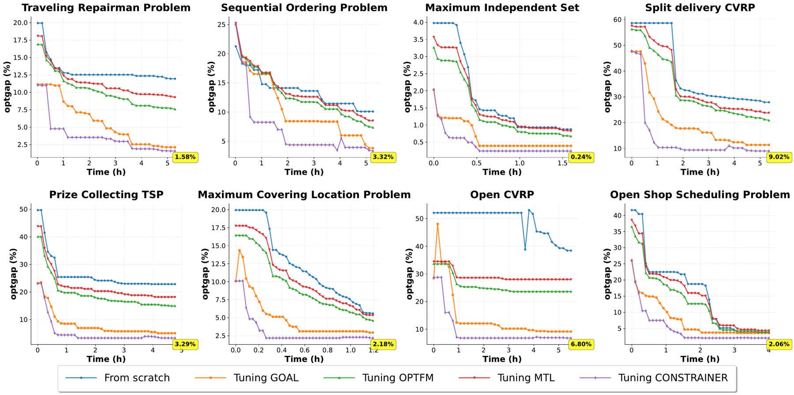

CONSTRAINER
Promptable Graph-Structured Optimization via Constraint Conditioning
1# a line-flow limit from AC optimal power flow 2P2 + Q2 ≤ Smax2
≤ ├── + │ ├── pow(P, 2) │ └── pow(Q, 2) └── pow(Smax, 2)
z_c ∈ ℝd # conditions every node of the problem graph
Constraints as structured inputs.
Neural methods for graph-structured optimization have achieved strong performance within individual problem classes, but are typically trained for fixed formulations, limiting reuse across related problem variants. Recent progress in foundation models has motivated shared neural backbones trained across multiple graph-structured optimization tasks; however, existing approaches primarily share instance-level representations while treating feasibility constraints implicitly. A key source of shared structure across constrained optimization problems is the constraint set itself, which often exhibits substantial overlap across tasks.
We propose CONSTRAINER, a constraint-conditioned framework for graph-structured optimization that treats constraints as structured inputs. Constraint specifications are parsed into operator graphs and encoded using a graph neural network to produce invariant constraint embeddings, which condition a shared backbone model for solution prediction. We evaluate our approach on power grid optimization and mixed-integer linear programming problems, where it shows improved solution optimality and enables efficient transfer learning and generalization compared to baseline methods.
Parse, encode, condition.

- 01
Parse constraints into operator graphs
Each constraint specification is parsed into a directed acyclic graph of operators and operands, such as
≤,+andpowover the variables of the problem. - 02
Encode them with a GNN
A graph neural network turns each operator graph into a constraint embedding that stays stable under admissible reparameterizations of the constraint.
- 03
Condition a shared backbone
A graph transformer over the problem graph G = (V, E) reads the constraint embeddings through a cross-attention block, and a task decoder predicts the solution.
What the paper contributes.
Constraint-conditioned foundation model
A structured constraint encoder parses constraint specifications into operator graphs and learns invariant constraint embeddings.
Structured conditioning
A constraint-conditioning backbone generalizes across constraint families and supports compositional transfer across reformulated tasks with shared objectives and variables.
Stability guarantees
Learned constraint embeddings are provably stable under admissible constraint reparameterizations.
Validation across domains
Experiments on mixed-integer linear programming and power-grid optimization benchmarks show improved generalization and more efficient transfer.
One model across routing, scheduling, packing and power grids.
CONSTRAINER is trained jointly across tasks and compared with multi-task baselines (OPTFM, MTL, GOAL) on MILP problems and with single- and multi-task neural baselines on power-grid optimization. The tables reproduce the main-paper results; the paper also lists single-task neural solvers for each MILP problem.
| Routing | Packing · Graph · Scheduling | |||||||
|---|---|---|---|---|---|---|---|---|
| Method | ATSP | CVRP | CVRPTW | OP | KP | MVC | UMSP | JSSP |
| OPTFM | 0.97 | 3.23 | 3.90 | 0.47 | 0.14 | 0.40 | 3.95 | 4.27 |
| MTL | 0.94 | 3.19 | 3.86 | 0.45 | 0.13 | 0.38 | 3.89 | 4.18 |
| GOAL | 0.91 | 3.16 | 3.82 | 0.43 | 0.12 | 0.37 | 3.84 | 4.13 |
| CONSTRAINER | 0.50 | 2.98 | 3.01 | 0.27 | 0.11 | 0.38 | 2.14 | 3.68 |
| PF | ACOPF | DCOPF | DCOTS | DCTNEP | ||||||
|---|---|---|---|---|---|---|---|---|---|---|
| Method | ACPF Feas | DCPF Feas | Gap | Feas | Gap | Feas | Gap | Feas | Gap | Feas |
| GNN (CANOS) | 95.11 | 97.14 | 4.80 | 93.00 | 3.60 | 94.20 | 6.10 | 88.45 | 5.40 | 85.32 |
| GAT | 96.42 | 97.86 | 4.10 | 94.35 | 3.05 | 95.65 | 5.30 | 89.96 | 4.60 | 86.71 |
| GT (MTL) | 97.88 | 98.72 | 3.55 | 95.60 | 2.35 | 97.10 | 4.90 | 90.85 | 3.80 | 87.94 |
| CONSTRAINER | 99.03 | 99.50 | 3.01 | 96.10 | 1.50 | 99.02 | 4.50 | 91.22 | 2.90 | 88.91 |

BibTeX
@inproceedings{memon2026constrainer,
title = {{CONSTRAINER}: Promptable Graph-Structured Optimization
via Constraint Conditioning},
author = {Memon, Zeeshan and Tian, Mingke and Song, Xinyuan and
Jin, Hongwei and Kim, Kibaek and Zhao, Liang},
booktitle = {Advances in Neural Information Processing Systems},
year = {2026}
}